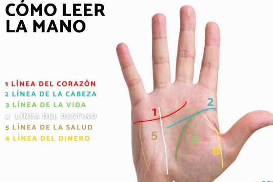
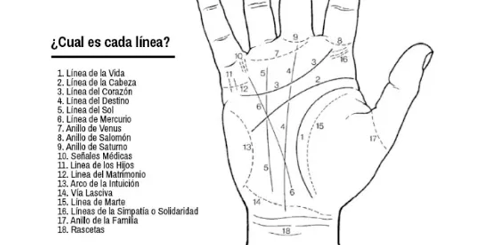
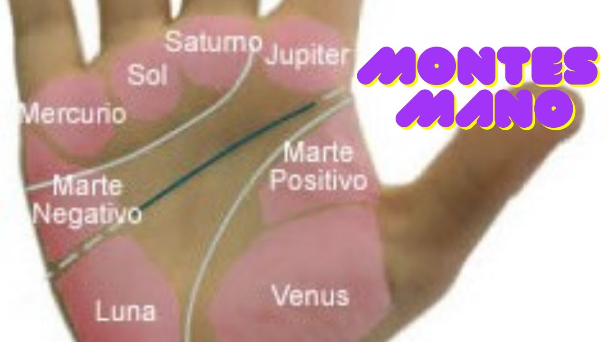

Los rituales con velas permiten canalizar la intención a través del fuego, el color y la energía simbólica. Es importante realizarlos en un espacio limpio y con la mente clara.
🌘 Fases Lunares y su Influencia
La Luna rige los ritmos emocionales, la intuición y los ciclos mágicos. Cada fase lunar tiene un poder específico que puedes aprovechar en rituales, limpiezas, hechizos y crecimiento personal.
🌑 Luna Nueva
Significado: Es un momento de inicio, siembra de intenciones y renacimiento energético. Ideal para comenzar proyectos y limpiar energías pasadas.
Rituales: Escribe deseos, medita en silencio, realiza limpiezas con salvia o baños de descarga.
🔙 Volver al índice
🌒 Luna Creciente
Significado: Energía de expansión y atracción. Etapa ideal para trabajar la abundancia, el crecimiento personal, el amor y la salud.
Rituales: Encender velas verdes o rosas, escribir afirmaciones, trabajar con cristales para atraer lo deseado.
🔙 Volver al índice
🌓 Cuarto Creciente
Significado: Fuerza para superar obstáculos. Tiempo para tomar decisiones y avanzar con determinación.
Rituales: Visualización activa, baños energizantes, velas amarillas para potenciar la voluntad.
🔙 Volver al índice
🌕 Luna Llena
Significado: Punto máximo de energía. Ideal para manifestar, consagrar objetos, potenciar rituales de amor y abundancia.
Rituales: Baños de luna, cargas de cristales, rituales de gratitud y liberación.
🔙 Volver al índice
🌗 Cuarto Menguante
Significado: Tiempo de introspección y limpieza. Ideal para soltar, perdonar, cortar lazos o hábitos negativos.
Rituales: Rituales de corte, limpieza energética, velas negras o blancas, escribir lo que se quiere dejar atrás y quemarlo.
🔙 Volver al índice
🌘 Luna Menguante
Significado: Preparación para el cierre de ciclo. Muy útil para la reflexión y purificación profunda del alma.
Rituales: Meditación guiada, organización, descanso, dejar ir relaciones, apegos o energías estancadas.
🔙 Volver al índice
🌚 Luna Negra (oscura)
Significado: Fase muy poderosa para la brujería avanzada, conexión con el subconsciente y con lo oculto.
Rituales: Invocaciones, contacto con guías, rituales de sombras, sanación kármica o de vidas pasadas.
🔙 Volver al índice
✋ Lectura de Manos (Quiromancia)
La quiromancia es el arte de interpretar la personalidad, el destino y las experiencias de vida a través de las líneas y montes de la mano. Cada mano es única y contiene información profunda sobre el pasado, presente y futuro.
🖐️ Tipos de Mano
- Mano de Tierra: Palma cuadrada, dedos cortos. Práctica, estable, conectada a lo material.
- Mano de Aire: Palma cuadrada o rectangular, dedos largos. Intelectual, analítica, curiosa.
- Mano de Agua: Palma larga, dedos largos. Emocional, intuitiva, sensible.
- Mano de Fuego: Palma larga, dedos cortos. Apasionada, creativa, impulsiva.
🔙 Volver al índice
👈 ¿Qué Mano Leer?
Mano dominante (derecha en diestros): representa el presente y cómo se está usando el potencial.
Mano no dominante: muestra el destino original, el potencial nato y el karma ancestral.
🔙 Volver al índice
📏 Líneas Principales

- Línea de la Vida: Refleja la energía vital, salud y grandes cambios.
- Línea de la Cabeza: Muestra la inteligencia, forma de pensar y toma de decisiones.
- Línea del Corazón: Relacionada con las emociones, amor y vínculos afectivos.
- Línea del Destino: Indica la vocación, karma y dirección de vida (no siempre está presente).
🔙 Volver al índice
🧭 Líneas Secundarias

- Línea del Sol: Fama, éxito personal o artístico.
- Línea de la Intuición: Alta sensibilidad y percepción espiritual.
- Línea de los Viajes: Traslados, migraciones, movilidad.
- Línea de los Hijos: Relación con descendencia o proyectos creados.
🔙 Volver al índice
⛰️ Montes de la Mano

Los montes son las zonas abultadas debajo de los dedos. Cada uno tiene un significado:
- Monte de Venus (bajo el pulgar): Amor, pasión, energía vital.
- Monte de Júpiter (bajo el índice): Ambición, liderazgo, ego.
- Monte de Saturno (bajo el medio): Responsabilidad, karma, sabiduría.
- Monte de Apolo (bajo el anular): Creatividad, arte, éxito.
- Monte de Mercurio (bajo el meñique): Comunicación, astucia, negocios.
- Monte de la Luna (lateral de la palma): Intuición, emociones, imaginación.
🔙 Volver al índice
📍 Línea de la Vida
Empieza entre el dedo índice y el pulgar y rodea el Monte de Venus.
- Larga y profunda: Vitalidad fuerte, vida larga y activa.
- Corta pero clara: Persona enfocada, con buena gestión de su energía.
- Débil o discontinua: Cambios frecuentes, momentos de baja energía o crisis.
- Ramificaciones hacia arriba: Nuevos comienzos, viajes, ascenso personal.
- Ramificaciones hacia abajo: Obstáculos, decaimiento físico o emocional.
- Doble línea de la vida: Protección especial, buena suerte o energía extra.
🔙 Volver al índice
🧠 Línea de la Cabeza
Se extiende horizontalmente por el centro de la palma, indicando el pensamiento y la mente.
- Larga y recta: Mente lógica, estructurada, racional.
- Larga y curva: Creatividad, imaginación, pensamiento intuitivo.
- Corta: Persona práctica, directa, con enfoque a lo concreto.
- Con bifurcaciones al final: Dudas internas, indecisiones.
- Cruzada por otras líneas: Confusión mental, estrés.
- Unida a la línea de la vida al principio: Personalidad cautelosa o muy dependiente de la familia.
🔙 Volver al índice
❤️ Línea del Corazón
Ubicada en la parte superior de la palma, debajo de los dedos. Habla del amor, los vínculos y la capacidad emocional.
- Larga y profunda: Amor intenso, relaciones importantes.
- Corta: Independencia emocional, persona reservada.
- Curvada: Sensibilidad, romanticismo.
- Recta: Amor práctico, control emocional.
- Con bifurcaciones: Triángulos amorosos o confusión afectiva.
- Rota o fragmentada: Heridas del pasado, traumas emocionales.
- Empieza bajo el dedo índice: Idealismo y búsqueda de amor verdadero.
- Empieza bajo el dedo medio: Egoísmo o deseo de control en las relaciones.
🔙 Volver al índice
🌀 Línea del Destino
Va del centro de la palma hacia la base del dedo medio. Refleja vocación, camino de vida y karma.
- Presente y clara: Persona con fuerte sentido del propósito o misión.
- No presente: Vida más libre, autodirigida, sin destino fijo.
- Comienza desde la línea de la vida: Camino influenciado por la familia o el entorno cercano.
- Comienza desde la base de la palma: Fuerte determinación desde joven.
- Interrumpida o cortada: Cambios radicales de rumbo en la vida.
- Cruzada por líneas horizontales: Obstáculos o karmas externos que interfieren en la misión.
🔙 Volver al índice
🌟 Signos en las Líneas y la Palma
Además de las líneas principales, ciertos símbolos que aparecen en la mano pueden tener un gran valor esotérico o predictivo:
- ⭐ Estrella: Talento especial o destino marcado. Si aparece en el Monte de Júpiter: liderazgo natural.
- ✖️ Cruz: Desafío, sufrimiento o ruptura importante. Si está en el Monte de Venus: amor difícil.
- 🔺 Triángulo: Protección espiritual o habilidad oculta. Potencia en lo oculto si está cerca del Monte de la Luna.
- 🔳 Cuadrado: Protección ante accidentes o peligros. Es un símbolo de resguardo energético.
- 🔁 Isla: Periodo de confusión o pérdida. Puede representar enfermedades o desequilibrio emocional si está en la línea de la vida o del corazón.
- 🔲 Rejilla: Energía dispersa. Puede indicar bloqueos o dificultades para enfocar metas.
🔙 Volver al índice
🔄 Combinaciones Avanzadas
Una lectura completa combina las líneas entre sí y su relación con los montes:
-
Línea del Corazón larga + Monte de Júpiter elevado:
Persona idealista en el amor, que sueña con una pareja perfecta.
-
Línea de la Cabeza curva + Monte de la Luna amplio:
Imaginación desbordante, posible inclinación a la escritura o artes.
-
Línea del Destino clara + Monte de Saturno marcado:
Fuerte sentido de propósito, persona resiliente con destino profundo.
-
Línea de la Vida doble + Monte de Venus desarrollado:
Persona muy energética, cuidada por fuerzas espirituales o con gran vitalidad.
-
Ausencia de línea del Destino + líneas secundarias activas:
Vida autodirigida, persona que forja su propio camino con múltiples intereses.
🔙 Volver al índice
🔯 Cábala Mística
La Cábala es una tradición esotérica originaria del misticismo judío que busca comprender los secretos del universo, el alma humana y la conexión con lo divino. A través de símbolos, letras, números y estructuras energéticas, la Cábala permite explorar los caminos del Árbol de la Vida y la creación.
🌳 El Árbol de la Vida
El Árbol de la Vida es el símbolo central de la Cábala. Representa el mapa del alma y del universo. Está compuesto por 10 esferas llamadas Sefirot y 22 senderos que las conectan.
- Keter (Corona): Unión con lo divino, la chispa de la creación.
- Chokmah (Sabiduría): Energía pura, intuición, lo masculino cósmico.
- Binah (Entendimiento): Receptividad, forma, lo femenino cósmico.
- Chesed (Misericordia): Amor expansivo, generosidad.
- Gevurah (Rigor): Justicia, disciplina, límites.
- Tiferet (Belleza): Armonía, equilibrio entre extremos.
- Netzach (Victoria): Pasión, impulso creativo, acción.
- Hod (Gloria): Intelecto, estrategia, comunicación.
- Yesod (Fundamento): Inconsciente, sueños, sexualidad, canal de manifestación.
- Malkuth (Reino): Mundo material, manifestación física, la Tierra.
🔙 Volver al índice
🌀 Las 22 Letras Hebreas
Las letras hebreas son consideradas canales energéticos, cada una con un valor numérico y un poder vibracional. En la Cábala, las 22 letras conectan las Sefirot del Árbol de la Vida.
Ejemplos:
- א (Alef): Espíritu, aliento divino, unidad suprema.
- ב (Bet): Dualidad, casa, receptividad.
- מ (Mem): Agua, sabiduría oculta, transformación.
- ש (Shin): Fuego sagrado, transformación, alma.
Estudiarlas activa circuitos internos de conciencia.
🔙 Volver al índice
🔢 Gematría y Números Cabalísticos
La gematría es un sistema que interpreta palabras hebreas a través de sus valores numéricos. Así se revelan significados ocultos y correspondencias místicas.
Ejemplos:
- 26 = יהוה (YHVH): El nombre sagrado del Creador.
- 18 = חי (Jai): Vida. Considerado un número de buena suerte.
- 72: Nombres de Dios. Se utilizan en meditación y protección espiritual.
🔙 Volver al índice
🌈 Las 10 Sefirot en detalle
Cada Sefirá representa una emanación divina. Conectarlas en meditación o ritual ayuda a equilibrar cuerpo, mente y alma.
- 1. Keter (Corona)
Color: Blanco puro o dorado
Ángel: Metatrón
Chakra: Coronilla (Sahasrara)
Significado: Fuente divina, voluntad suprema, el Todo
Ritual: Meditación en silencio total, conexión con el Ser Superior
- 2. Chokmah (Sabiduría)
Color: Gris o azul eléctrico
Ángel: Raziel
Chakra: Tercer ojo (Ajna)
Significado: Inspiración divina, impulso creativo masculino
Ritual: Visualización creativa, oráculo o canalización
- 3. Binah (Entendimiento)
Color: Negro o índigo
Ángel: Tzaphkiel
Chakra: Tercer ojo (Ajna)
Significado: Contención, estructura, principio femenino cósmico
Ritual: Escribir y comprender sueños, meditación con obsidiana
- 4. Chesed (Misericordia)
Color: Azul real
Ángel: Zadkiel
Chakra: Corazón (Anahata)
Significado: Amor expansivo, benevolencia
Ritual: Ofrendas, actos de bondad, visualización de luz azul
- 5. Gevurah (Rigor)
Color: Rojo
Ángel: Kamael
Chakra: Plexo solar (Manipura)
Significado: Justicia, disciplina, fuerza interior
Ritual: Cortes energéticos, protección con velas rojas
- 6. Tiferet (Belleza)
Color: Amarillo dorado
Ángel: Rafael
Chakra: Corazón (Anahata)
Significado: Armonía, compasión, sanación
Ritual: Meditación con cuarzo rosa, afirmaciones de equilibrio
- 7. Netzach (Victoria)
Color: Verde esmeralda
Ángel: Haniel
Chakra: Sacro (Swadhisthana)
Significado: Deseo, pasión, impulso, arte
Ritual: Danza consciente, velas verdes, invocación de creatividad
- 8. Hod (Gloria)
Color: Naranja o ámbar
Ángel: Miguel
Chakra: Garganta (Vishuddha)
Significado: Comunicación, razonamiento, expresión
Ritual: Escritura automática, invocación con salmos
- 9. Yesod (Fundamento)
Color: Violeta o plateado
Ángel: Gabriel
Chakra: Raíz (Muladhara) y sexualidad
Significado: Puente entre lo espiritual y lo físico
Ritual: Limpiezas con agua, trabajos con luna llena
- 10. Malkuth (Reino)
Color: Marrón, negro, verde oscuro
Ángel: Sandalfón
Chakra: Raíz (Muladhara)
Significado: Manifestación, tierra, cuerpo, realidad
Ritual: Caminar descalzo, rituales con cristales, conexión con la Tierra
🔙 Volver al índice
✨ Usos Mágicos y Meditativos de la Cábala
La Cábala no es solo un conocimiento teórico: es una herramienta para la transformación espiritual, la protección energética y la conexión con los planos superiores.
🧘 Meditación con el Árbol de la Vida
- Visualiza el Árbol completo desde la base (Malkuth) hasta la corona (Keter), subiendo por cada Sefirá con su color y palabra clave.
- Respira profundamente en cada Sefirá e imagina que activas esa energía dentro de ti.
- Utiliza la frase: “Yo soy el canal de la Luz Divina” para cerrar la sesión.
🕯️ Ritual de alineación energética con velas
Coloca 10 velas en forma de Árbol de la Vida (puedes usar los colores de cada Sefirá).
- Enciende desde Malkuth hacia Keter, pidiendo limpieza, expansión y claridad espiritual.
- Puedes añadir cristales correspondientes (ej. amatista en Keter, cuarzo rosa en Tiferet).
🔢 Trabajo con números cabalísticos
- Medita en el número 72 y recita el nombre de un ángel del Shem haMephorash (uno de los 72 nombres de Dios) para protección.
- Ejemplo: “Vehuiah” – energía de nuevos comienzos y voluntad divina.
🧿 Protección con la Cábala
- Dibuja el Árbol de la Vida o las letras hebreas en papel pergamino con tinta dorada.
- Llévalo contigo como talismán de protección energética.
- También puedes escribir el nombre de un ángel protector cabalístico en hebreo (ej. מיכאל – Miguel).
🌕 Meditación lunar con Sefirot
- En Luna Llena, trabaja con Yesod para manifestar sueños, visiones y limpieza energética.
- Escribe tus intenciones y visualízalas subiendo por las esferas hasta Tiferet.
🔙 Volver al índice
🧿 Amuletos Cabalísticos y Símbolos Sagrados
Los amuletos cabalísticos se emplean desde hace siglos para atraer protección, luz, sanación y guía espiritual. Pueden estar dibujados en pergamino, colgados como colgantes o incluso visualizados en meditación.
🌳 El Árbol de la Vida
- Símbolo central de la Cábala.
- Puede usarse como meditación visual o como talismán para armonía y evolución espiritual.
- Colgado en espacios sagrados, armoniza la energía y atrae equilibrio.
🔢 Los 72 Nombres de Dios (Shem haMephorash)
- 72 combinaciones de tres letras hebreas extraídas del Éxodo 14:19–21.
- Cada uno corresponde a un ángel protector y una frecuencia espiritual.
- Ejemplos comunes:
- Vehuiah (והו): Renovación, nuevos comienzos.
- Lelahel (להה): Sanación y creatividad.
- Aladiah (עלד): Protección contra el mal.
- Se escriben en hebreo, en pergaminos o piedras, y se medita con ellos.
🔯 El Tetragrámaton – יהוה (YHVH)
- El Nombre Sagrado de Dios en hebreo: Yod–He–Vav–He.
- No debe pronunciarse, solo meditarse o visualizarse.
- Usado en rituales de limpieza, consagración y conexión divina.
🧿 Otros símbolos comunes
- Menorá: Candelabro de 7 brazos. Luz divina, guía y revelación.
- Hamsa: Mano protectora contra el mal de ojo. Frecuente en colgantes.
- Estrella de David: Equilibrio entre el cielo y la tierra, espíritu y materia.
📜 Cómo usarlos
- Dibújalos en pergamino con tinta ritual (dorado, plata o rojo).
- Cárgalos bajo la luna llena o al sol durante 72 horas.
- Conságralos con salmos, velas o recitación silenciosa.
- Guárdalos cerca del corazón, debajo de la almohada o en tu altar.
🔙 Volver al índice